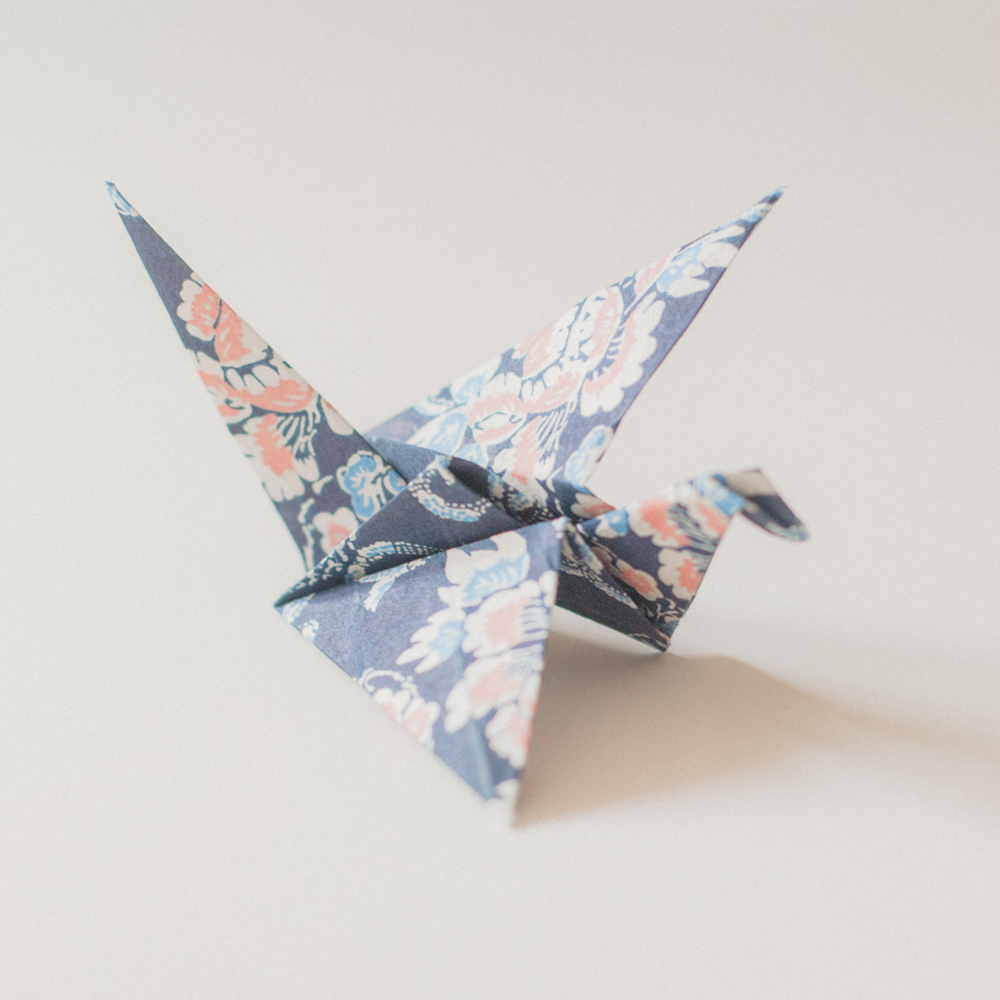
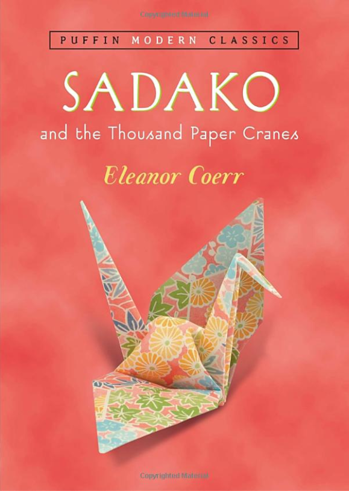
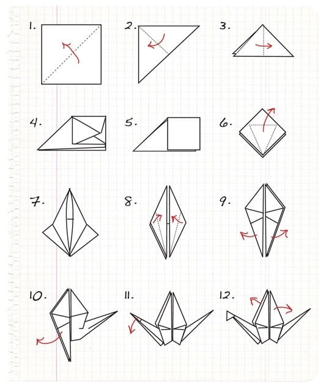

1. Famous origami ART
When most people think of origami, their mind jumps straight to the elegant paper crane. The idea of folding a paper crane yourself might seem intimidating at first, but the process is super straightforward and even first-time origami makers can make one in just a few minutes. In this article, we’ll show you how to make a traditional origami crane step-by-step (with visuals to help you bring your beautiful bird to life). All you need is a square of paper and a flat surface. Let’s get started!
2. Cultural significance
 click to watch image sourceIn Japan cranes have been thought a symbol of long life. An old fix phrases says "cranes live a thousand years". Here "a thousand" is not necessary to designate the exact number, but a poetic expression of huge amounts. Historically well-wishers offered a picture of a crane to shrines and temples as well as paper cranes. Origami, specially crafted and pattern-printed paper was invented in Edo period, and in the late 17th century books referring not only to "paper cranes" but also to "one thousand cranes" were published.
3. Sadako Sasaki
The one thousand origami cranes were globally popularized through the story of Sadako Sasaki, a Japanese girl who was two years old when she was exposed to radiation from the atomic bombing of Hiroshima during World War II. Sasaki soon developed leukemia and, at age 12 after spending a significant amount of time in a hospital, began making origami cranes with the goal of making one thousand, inspired by the senbazuru legend. In a fictionalized version of the story as told in the book Sadako and the Thousand Paper Cranes, she folded only 644 before she became too weak to fold anymore, and died on 25 of October 1955. To honor her memory, her classmates agreed to fold the remaining 356 cranes for her. In the version of the story told by her family and classmates, the Hiroshima Peace Memorial Museum states that she did complete the 1,000 cranes and continued past that when her wish failed to come true.
There is a statue of Sadako holding a crane in Hiroshima Peace Memorial Park, and every year on Obon day, people leave cranes at the statue in memory of the departed spirits of their ancestors.[citation needed] According to her family, and especially her older brother Masahiro Sasaki, who speaks on his sister's life at events, Sadako not only exceeded 644 cranes, she exceeded her goal of 1,000 and died having folded approximately 1,400 paper cranes. In his book, The Complete Story of Sadako Sasaki, co-written with Sue DiCicco, founder of the Peace Crane Project, Masahiro says Sadako exceeded her goal.
4. How to make crane paper
The size of the origami paper does not matter when assembling a thousand paper cranes, but smaller sheets consequently yield smaller and lighter strings of cranes. The most popular size for senbazuru is 7.5 by 7.5 centimetres (3.0 in × 3.0 in). Some people cut their own squares of paper from anything available, such as magazines, newspapers, notebooks, and printer paper.
this is my result after 20 minutes of tinkering to learn how to fold a paper crane. Through this boring article, I hope you will also create your first paper crane work. Hope everyone has a good time with the papers ♡.